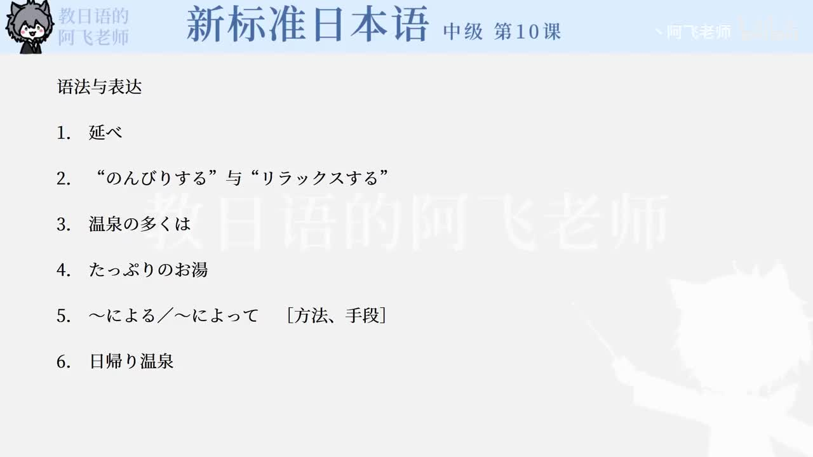

Bilibili P149 · Reading Text
温泉大国、日本
从温泉定义、颜色和成分，到疗养、放松、日归温泉、銭湯与スーパー銭湯，训练说明文里的定义、举例、趋势和总结。
全篇听力精讲
按 18 段说明文轮播。每段依次播放课文原句、中文意思、整句结构、断句、语法和词汇。
这篇文章在讲什么
温泉是什么不只是热水，冷水只要含规定成分也可称为温泉。
为什么受欢迎从疗养用途转向换环境、放松身心和自然体验。
温泉产业怎么变化日归温泉、銭湯、スーパー銭湯满足忙碌人群的休闲需求。
说明文推进链
1 · 数据約3,000の温泉地
2 · 定义成分を含む水
3 · 效果病気に効く
4 · 服务日帰り温泉
5 · 总结いやしの場
逐句精读
重点语法与说明文表达
温泉文化核心词汇
练习与复习
来源说明：视频标题、时长、CID 和首帧来自 Bilibili 公开视频接口；课文原文来自本地《新标准日本语》中级第10课教材数据，并修正明显录入误差用于学习，例如「銭湯」「癒しの場」。